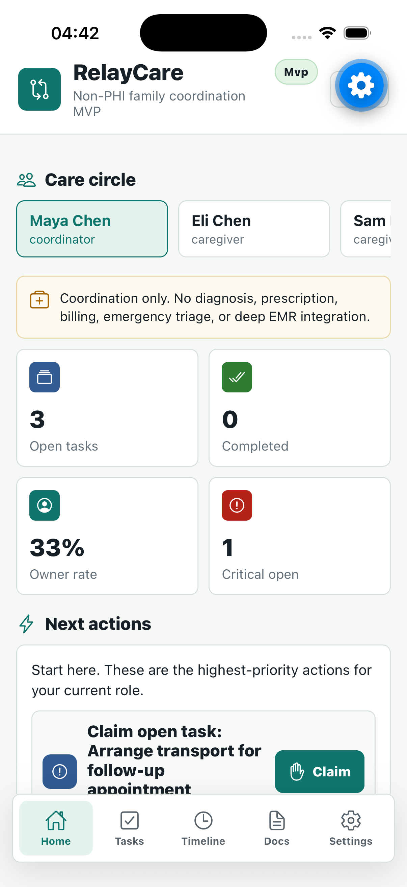
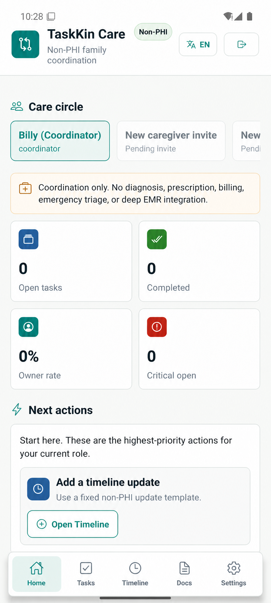
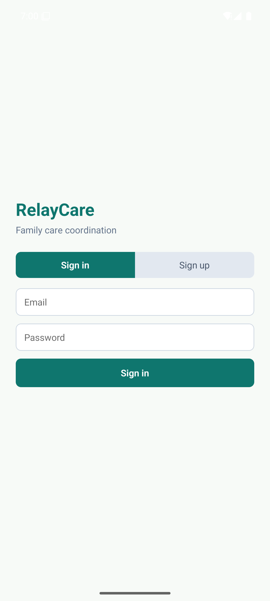

介護はひとりで抱えるものではありません。
TaskKin Care は、家族の「あれ、どうなってる？」を、担当・状態・期限のついた行動に変えます。タイムラインと週次レポートで、みんなが同じ状況を見られます。

TaskKin Care が必要な理由
家族の介護では、たいてい誰かひとりが状況を伝え、催促し、結局すべてを引き受けます。TaskKin Care は、情報だけでなく「誰が引き受けたか」も見えるようにします。
記録より先に行動
どのタスクにも担当・期限・状態があります。
正直に引き継げる
引き受ける・辞退する・ほかの人に渡す、どれも選べます。
静かな更新
お知らせは役割と優先度に応じて表示されます。
主な機能
情報 → 行動 → 担当 → 完了 → ふり返り。この流れで、連携がはっきりします。
家族と役割
まとめ役・介護担当・閲覧者の権限でメンバーを招待できます。
タスクと引き継ぎ
作成・引き受け・辞退・引き継ぎ・完了ができます。
タイムライン
受診・訪問・送迎・リマインドをまとめて残せます。
役割ごとの更新
自分が動ける変更だけが目に入ります。
週次のまとめ
完了したこと・残っていること・これからの予定を共有できます。
書類と履歴
医療情報を含まない書類をアップロードし、OCR を手動で確認し、主な変更を追えます。
家族での使い方
ケアチームをつくる
家族を招待し、最小限の役割を割り当てます。
タスクを追加する
タスク・予定・確認済みのメモを登録します。
引き受けるか、渡す
誰が担当するかをはっきりさせます。
1 週間をふり返る
進み具合と次にやることを共有します。
アプリの中身


よくある質問
TaskKin Care は医療サービスですか？
いいえ。家族で段取りを整えるための連携ツールで、診断・処方・臨床的な助言・救急サービスは提供しません。
診療記録をアップロードできますか？
いいえ。TaskKin Care は PHI（保護対象健康情報）を想定していません。診断・処方・保険などの PHI はアップロードしないでください。
タスクは誰が見られますか？
役割ごとに見える範囲が決まります。閲覧者には、タスク・書類・履歴への API アクセスはありません。
対応言語は？
アプリとこのサイトは、英語・中国語・スペイン語・日本語に対応しています。